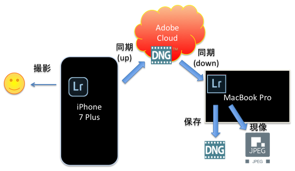

必要なもの
- 実機
- iPhone7 Plus (iPhone7 は試してません。所持してないので)
- PC (MacBook Pro で確認しました)
- アカウント
- Adobe CC アカウント (ID 自体は無料だけど、PC で Lightroom を使うのに有料サブスクリプションが要る)
- アプリ
- Adobe Lightroom for iPhone (無料)
- Adobe Photoshop Lightroom CC (有料)
全体の流れ

手順
iPhone7 Plus
- Adobe Lightroom for iPhone をインストールする (無料)
- Adobe CC アカウントでログインする。(画面左上からアクセス)
- Lightroom のカメラを使って撮影 (画面右下からアクセス)
- DNG の(フラット)ボタンがあるので有効にする
- 撮影する
- 同期が終わるまで待つ
- 雲のアイコンをタッチすると進捗が分かる
MacBook Pro
- Adobe Lightroom for iPhone をインストールする (有料)
- Adobe CC アカウントでログインする。(覚えてないけど操作があったかも)
- Lightroom mobile との同期するまで待つ
- 左上の Lr ログをクリックすれば同期しているか確認出来る。
- 画像の一覧が出るので、DNG が欲しい画像を選択する。
- 右クリックで Lightroom プリセット => DNG に書き出しを実行。
以上で、撮影した DNG ファイルが手元のディスクに保存されます。
参考サイト
- Lightroom デスクトップとモバイルプラットフォームの同期